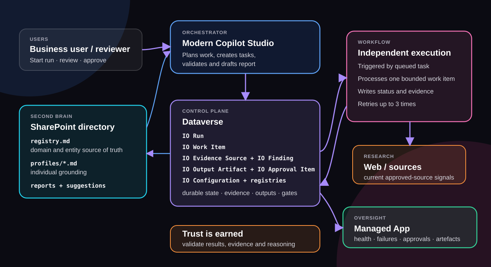
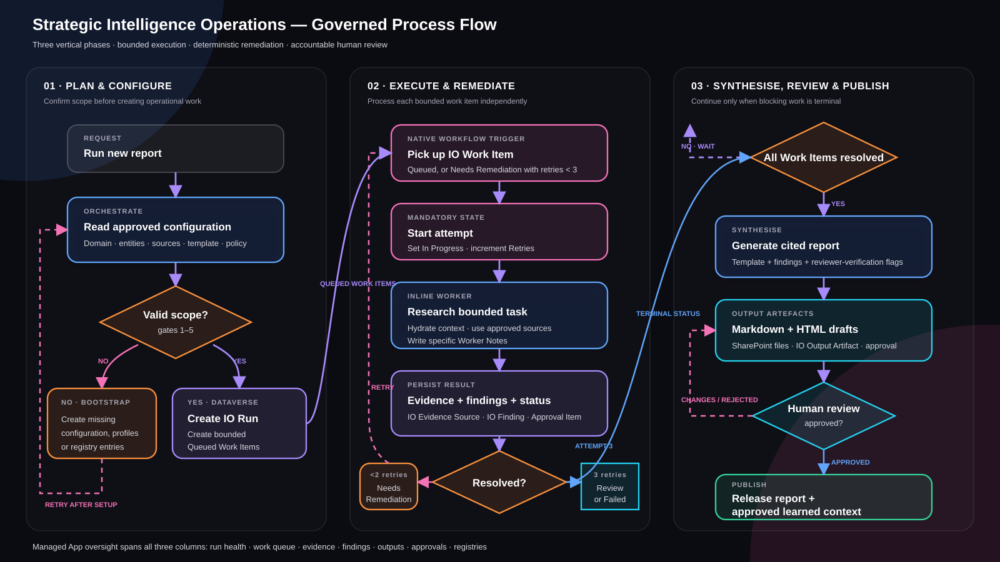

Strategic Intelligence Operations
From recurring research request to governed, self-running intelligence operation
←→ to navigate · Home first slide · I index · F fullscreen · T theme
From recurring research request to governed, self-running intelligence operation
The target is not another generated answer. It is a repeatable operation that discovers evidence, makes routine decisions, produces cited reports and asks for human judgement only when accountability demands it.
Continuously retrieve current evidence from approved public and enterprise sources.
Assess relevance, confidence, materiality and the next bounded action.
Generate cited Markdown and self-contained HTML drafts for review.
Bring in a person only for ambiguity, consequence or accountable approval.
A recurring competitor brief needs current research, living profiles, evidence quality, complete coverage, report synthesis and accountable decisions about new competitors or uncertain conclusions.
“The agent does the work. The human makes only the decision the agent must not make.”
Begin with one familiar report, then reveal that the same governed operating contract can run many intelligence domains.
Routes skills, calls tools, uses reasoning, drafts analysis, asks for approval and returns review links.
Registry, profiles, generated reports, suggestions, decisions, sessions and analyst material.
Runs, work items, evidence, findings, output artefacts, registries and approvals.
Processes row-triggered research tasks, checks completion and triggers report continuation.
Run health, findings review, approvals, artefacts, registry and data quality exceptions.
Current web and enterprise research with source, date, query and run traceability.
Trust is earned. In this design, trust comes from being able to validate, challenge, and question the agent’s results, sources, and reasoning at any point in the process.
Key idea: MCS orchestrates; Workflows execute; Dataverse audits; SharePoint remembers; App oversees.

Three vertical phases show how the solution configures scope, executes bounded work, remediates unresolved research, synthesises outputs and introduces human judgement only at the approval boundary.

Analysts can inspect the memory directly instead of relying on opaque chat history or hidden state.
The agent can retrieve known files, create new artefacts, and use SharePoint version history for change traceability.
Every report follows the same traceable path from orchestration, to bounded work, to evidence, to synthesis, to accountable approval.
Copilot Studio creates the run and reads the approved domain, entity, source and template registries.
Dataverse stores bounded work items with prompt, task type, retry count and status.
Workflows process work independently and preserve evidence, findings and worker context.
SharePoint holds cited reports; the Control Center shows run health, findings and approvals.
This is where trust becomes visible: every result can be questioned through its task status, source evidence, workflow outcome and approval trail.
Lesson: the enterprise pattern is not “make one smarter prompt.” It is to decompose the work into auditable functions, let the platform process them independently, and give the solution enough status, retries, and reasoning to self-heal when something goes wrong.
The Power Apps Code App makes the agent’s operational state visible and gives reviewers governed actions without exposing implementation complexity.
Inspect source, excerpt, credibility, retrieval date and linked findings.
Requeue, remediate, complete or skip with explicit confirmation and audit.
Approve outputs, registry changes and unresolved human-judgement items.
No source URL, source title, source date, retrieval date and query log means no report finding.
Every work item needs an explicit completed, no-activity, review, skipped or failed outcome.
Findings are compared with prior reports and profiles before becoming New or Update.
New entities, sources, learned context and publication are approved before application.
The agent can be self-expanding, but only through controlled approvals, profile creation, registry updates and Dataverse lifecycle state.
Research is decomposed into independent units, so one issue does not collapse the whole report run.
Each run has work items, evidence, findings, artefacts, approvals and SharePoint version history.
The system can propose new entities, sources, domains and profile updates without bypassing human control.
Competitor briefs, battlecards, market signal digests and customer-theme monitoring.
Policy impact briefs, account intelligence and stakeholder change monitoring.
Status reports, governance artefacts, incident situation briefs and executive updates.
Change registries, profiles, sources and templates. Keep the core orchestration, work-item lifecycle, evidence model and approval contract fixed.
Search strategy, evidence relevance, finding type, confidence, materiality, retries and report structure.
Trigger scope, status transitions, retry limits, terminal counts and synthesis continuation.
Unresolved ambiguity, new registry entries, sensitive conclusions, durable learning and publication.
Any recurring knowledge-work process that needs current research, shared memory, source evidence, approvals, audit and human review can use the same design.
New domains are configured through registries, profiles and templates—not rebuilt from scratch.
Copilot Studio, Dataverse, workflows, SharePoint and Power Apps each own a clear responsibility.
Evidence, remediation, approvals, audit and human decision boundaries are part of the runtime.
Use this as a table of contents during discussion. Click any tile to move directly to that slide, then use the Index button to come back.
Dataverse-enabled environment; modern Copilot Studio with native Workflows available; Power Apps code apps enabled; SharePoint second-brain site; managed-solution deployment with connection references and environment variables.
Copilot Studio capacity through Copilot Credits or PAYG; Power Apps Premium for Control Center users; Microsoft 365 licensing for SharePoint, Teams and Exchange features used; connector-specific licensing where applicable.
Environment Maker/System Customizer for installation; least-privilege Dataverse roles for users and service accounts; SharePoint folder permissions; approved connector connections; Teams and mailbox permissions only when delivery is enabled.
Dataverse, SharePoint, Copilot Studio and Power Apps allowed in the same Business data group. Outlook and Teams must also be allowed for delivery. RSS, HTTP and custom connectors require explicit approval and endpoint controls.
Confirm regional availability and tenant policy for MCP tools, generative orchestration, public-web access and code apps. DLP must not mix Business and Non-Business connectors in one workflow. External feeds, APIs and publisher content require separate licences and approved credentials; the solution does not bypass source-access controls.